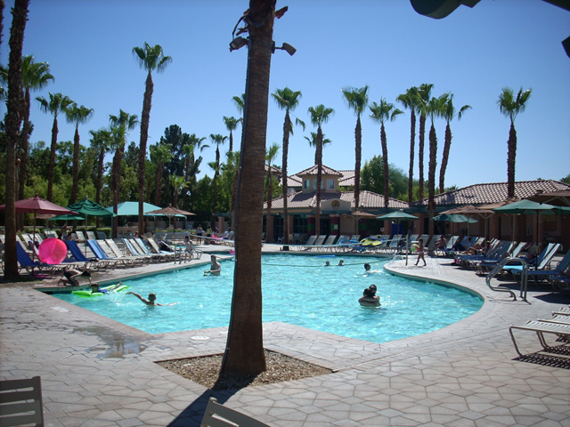
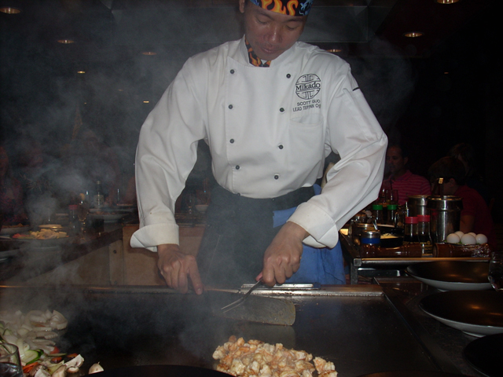

Palm Springs 2007
HA HA! You got Punked! We are going back to Palm Springs! Punking #2 is a Success! HA HA! Anyways, Heresd a blurry driveby shot of Pharohs Lost Kingdom.
Here are the Palm Springs Windmills. Seeing them means you're almost there.
Welcome to Palm Springs. Here are the new Villas.
There are traces of Incrediblecoasters hair and DNA in this room, So don't get it.
 The room card keys here look nice.
The room card keys here look nice.
The new Villas arn't as good as the Old Villas because they are smaller.
The hot sun is melting my brain already.
Islands, Not quite McDonalds, Not quite Mikados. Just Islands.
The theming here is so great that it surpasses Disneyland! Every corner is a sparkling peice of heaven!
I wonder what makes the Happy Hour such a Happy Hour?
Who doesn't love Palm Springs.
Time to make one last move before the cops lock me away with Paris Hilton II.
But the cops won't catch me in the Sprinklers! I, Britney Spears II will LIVE ON FOREVER!!!!!!!!!!!!!!!!!!
Another look at the Villas.
Welcome to the Palmeres Pool. The best of all the Palm Springs Pools.

With many pools here, People claim it to be the best pool here.
 Here is the Rock Waterfall.
Here is the Rock Waterfall.
Sorry, But playing Chess won't stop your brains from melting and getting stupider.
Even the kiddy pool looks very nice.
Heres a glimpse of the old villas.
Here is the Original Palm Springs Marriot Hotel. Still Very Nice.
Wow. On the inside, It looks diffrent from last time.
They put the parrots in cages! And they took their lovers away! I guess they don't want any more Baby Parrots. Or they could just buy Parrot Condoms, But thats too expensive. So no more kissing for this parrot.
I KNEW IT! I KNEW IT! PALAPAS IS GONE!!! THAT STORE WAS A PEICE OF S**T FROM WHEN I FIRST SAW IT!!!!!! But this is crappy as well.
Time to take the Hotel Boat over to Mikados.
Onion Volcanos, Here I come!
Finally! I get to return to one of my favorite resteraunts!
 Enter into a Resteraunt with humor.
Enter into a Resteraunt with humor.
 According to Celeste, This is Moo Moo. To her, Fish live forever.
According to Celeste, This is Moo Moo. To her, Fish live forever.
With the power of Chopsticks, I can pick up ANYTHING!!!!!!!!

Let me get the dissapointment part of the update out of the way, I did not take any pictures of the Onion Volcano, Throwing Shrimp in mouths our any fire. That was all on video.
(Which is not posted on the internet.)
Heres a look at what you eat at Mikados.
What makes Mikados so good is the fact that they have a sense of humor. The chefs tell jokes and have fun with everything. No boring waiting for your food to come time.
Heres the traditonal Mikados salt message. When you're doing photographing the message, pour the salt into a neighbors wound and watch them scream like hell!
 And they let you smoke wafer here. With twice as much nictotine as a cigarette and four times as likely to give you cancer than marijuana!
And they let you smoke wafer here. With twice as much nictotine as a cigarette and four times as likely to give you cancer than marijuana!
Welcome to Soak City Palm Springs!
Here is their legendary Surfing Statue.
 Still one of Soak Citys Best Rides.
Still one of Soak Citys Best Rides.
 Every inch of this ride is filled with fun.
Every inch of this ride is filled with fun.
 Riding this again just proves how much High Extreme sucks!
Riding this again just proves how much High Extreme sucks!
 And here is Soak Citys new ride! Another Tornado Clone.
And here is Soak Citys new ride! Another Tornado Clone.
But this version is better because it does more stuff before it drops into the funnel.
Heres another good slide at Soak City Palm Springs.
 The Pitch Blackness reminds me of my own empty head.
The Pitch Blackness reminds me of my own empty head.
Undertow is another fun slide here.
Pipeline is a claustrophobic mans idea of torcher.
Wipeout is the biggest dissapointment at Soak City Palm Springs. I knew it was a mild slide, But I didn't think that Silver Bullet had 5000 times more force than this peice of crap.
 Here you can see Wipeout, Pipeline and Undertow all in the same picture. Try and guess which slide is which and the first person who emails me with the right answer will get a dollar.
Here you can see Wipeout, Pipeline and Undertow all in the same picture. Try and guess which slide is which and the first person who emails me with the right answer will get a dollar.
Here is a good shot of ********. (No you will not get the dollar because I'm not telling you which slide this is)
 Proof that we're in Palm Springs.
Proof that we're in Palm Springs.
A good look at Kahunas Beach House with Pacific Spin in the background.
 Time for your big backscrathing wedgie giving drop slide.
Time for your big backscrathing wedgie giving drop slide.
This one has a really good location though. I give them thumbs up for not ruining it.
 Its actually much less painful than Venom Drop.
Its actually much less painful than Venom Drop.
 Aww. I was hoping that this was one of the waterslides they had here.
Aww. I was hoping that this was one of the waterslides they had here.
Wow. The heat will be my new lullaby. It works like a charm. Almost a little too well.
 Everybody loves pizza...because we executed everyone who doesn't!
Everybody loves pizza...because we executed everyone who doesn't!
We played Croquet on our last day here. And the next set of photos are the Celeste sucks at Croquet Photos.
Here you see Celeste pathetically failing to hit the ball into the hole less than half an inch in front of her.
Here you see Celeste fall on her ass trying to hit the ball into the hole.
Here you see Celeste about to tenderize the ground to make the ball move.
And the ducks from Disneyland flew all the way here just to laugh at Celeste!
Home